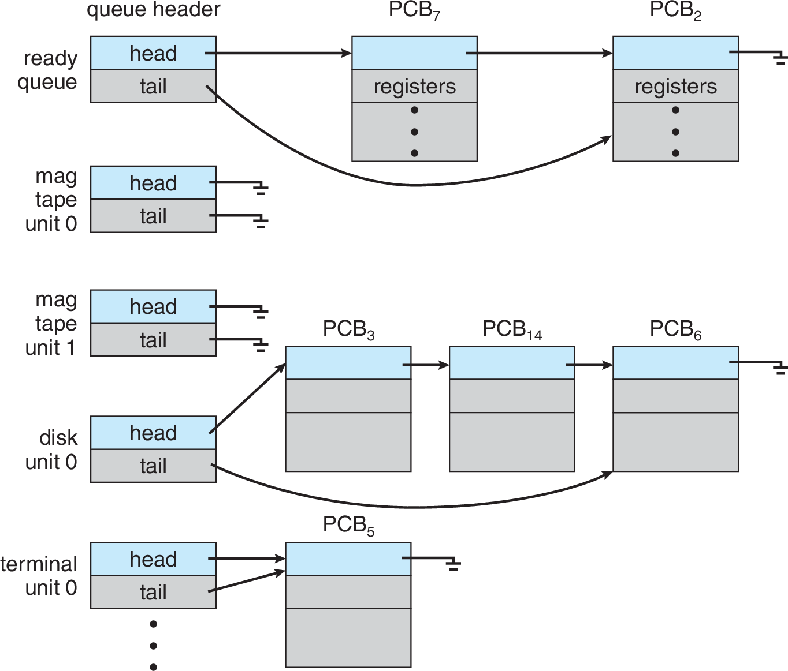
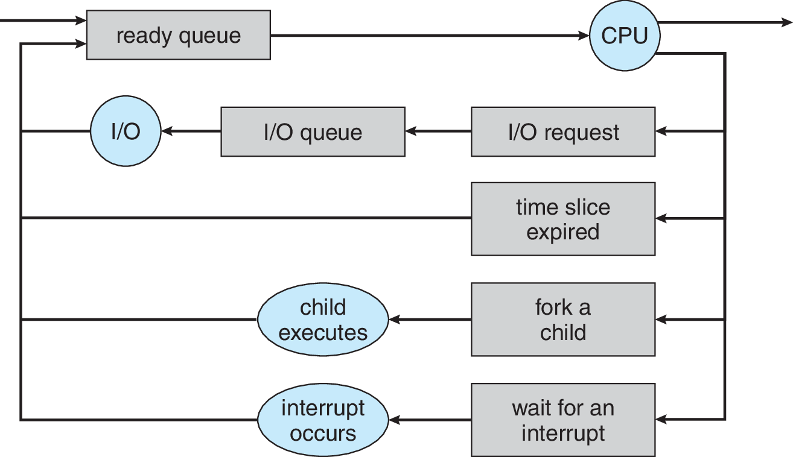
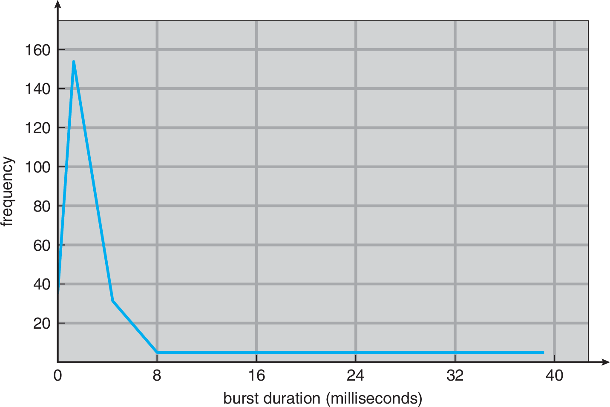
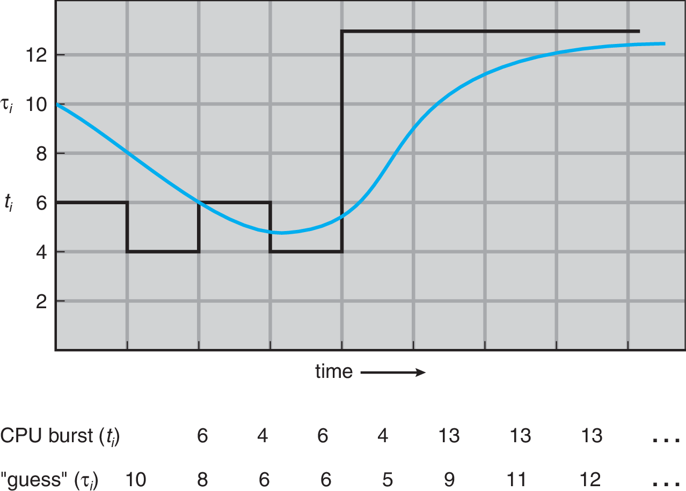
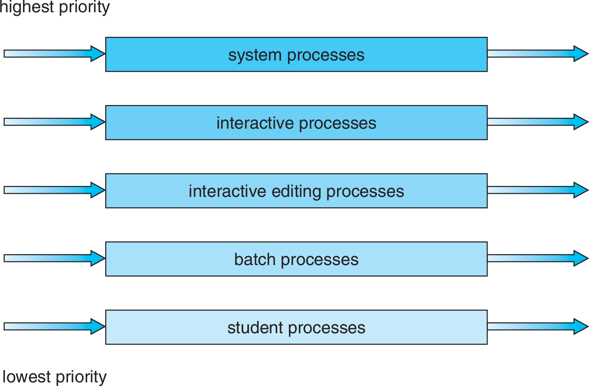
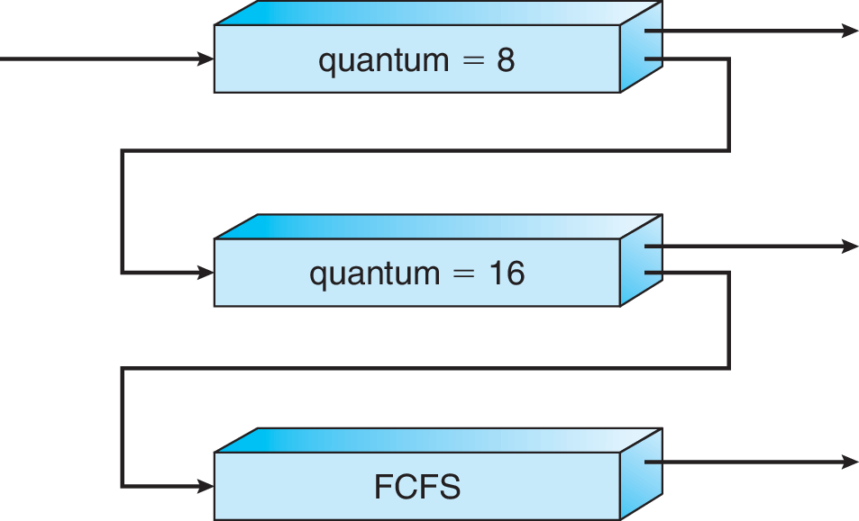

Sistemas Operativos y Redes
Scheduling
Semestre 2022-1
Cristian Ruz - cruz@ing.puc.cl
Departamento de Ciencia de la Computación
Pontificia Universidad Católica de Chile
Scheduling
Scheduling
Planificación
En todos los problemas en que los recursos no son suficientes es necesario revisar cómo se distribuyen, y aunque sean infinitos hay que administrarlos para evitar conflictos.
- Préstamo de libros en la biblioteca
- Asignación de alumnos, cursos y salas
- Tareas y empleados
Y dentro de lo que nos concierne,
- Asignación de procesos a la CPU
- Uso de I/O por los procesos
- Disco
- Memoria
- Red
- '/dev/*' audio, gpu,…
CPU-Scheduling
CPU-Scheduling
¡Multiprogramación y Time-sharing (multitasking)!
Objetivo de tener multiprogramación:
- Maximizar utilización de (una) CPU
Objetivo de tener multitasking
- Asignar tiempo de (una) CPU frecuentemente a todos los procesos

Muchos procesos en estado ready
… ¿qué hacer con ellos?
¡Colas!
Colas de scheduling
Múltiples colas
El Scheduling puede ser visto como un sistema de manejo de colas
¿Bajo qué criterio?
$longrightarrow$ algoritmos de scheduling
Distintos schedulers en un SO
- Long-term Scheduler Admite procesos en la cola ready. Determina el grado de multiprogramación.
- Short-term Scheduler Selecciona procesos en la(s) cola ready a ejecutar.
- Medium-term Scheduler Modificación temporal del grado de multiprogramación, haciendo swapping
¿Y si estamos siempre haciendo Scheduling en vez de ejecutar programas?
Scheduling es importante para proveer multiprogramación
… pero scheduling y context switch son sólo overhead
- ¿Qué pasa si el scheduler demora más tiempo de lo que toma el proceso?
- ¿Qué pasa si el context switch demora más tiempo de lo que toma el proceso?
- ¿Qué pasa si se le asigna poco tiempo a cada proceso?
- ¿Qué pasa si hay muchos procesos ready?
Contención de procesos se refleja en thrashing
Ejecución típica de un proceso:
Dos etapas:
- Uso de CPU (CPU-burst)
- Espera por I/O (I/O-burst)
Procesos suelen estar dominados por uno u otro
- CPU-bound
- I/O-bound
¿Cuánto dura típicamente un CPU-burst?
No hay una respuesta única, pero…
Duración de CPU-burst podría afectar el algoritmo de scheduling
Tipos de Scheduling
Hay que tomar decisión de scheduling cuando:
- Proceso pasa de Running a Waiting
- Proceso pasa de Running a Ready
- Proceso pasa de Waiting a Ready
- Proceso termina
Dos tipos de scheduling
- Scheduling con expropiación (preemptive)
- Requiere interrupciones por timer
- Requiere cuidados de sincronización
- Scheduling sin expropiación (non-preemptive)
- Requiere cooperación de los procesos (deben devolver la CPU pronto)
- Así que un programa puede (intencionalmente o no) tomar control permanente de la CPU
- Permiten un diseño más simple de Programas y Scheduler
- Usado en Windows 3.1, MacOS (antes de X)
- También se conoce como scheduling cooperativo
Criterios de scheduling
¿Qué algoritmo puede ser mejor?… depende
- Mantener la CPU lo más usada posible
- Cantidad procesos atendidos por unidad de tiempo
- Tiempo total de un proceso, incluyendo esperas (wall-clock time)
- Tiempo de espera de un proceso en estado Ready
- Importante para sistemas interactivos
¿Qué tiempo es mejor minimizar?…
¿Tiempo promedio? ¿Tiempo máximo? ¿Varianza?
Algoritmos de Scheduling
First-Come First-Served (FCFS)
El más simple: una cola FIFO
Ejemplo: Procesos en cola: $P=\{P_1,P_2,P_3\}$, con tiempos de ejecución (burst-time) $T=\{T_1=24,T_2=3,T_3=3\}$ en milisegundos
- Tiempo promedio de espera, para el orden $P_1, P_2, P_3$ $\to 17$ms
- Tiempo promedio de espera, para el orden $P_2, P_3, P_1$ $\to 3$ms
Non-preemptive
- +Simple
- -Poco predecible. Procesos CPU-bound pueden bloquear a los I/O-bound, bajo una secuencia "desafortunada" de llegada
Shortest-Job First (SJF)
El más corto primero
Ejemplo: Procesos en cola: $P=\{P_1,\cdots, P_4\}$, $T=\{T_1=6,T_2=8,T_3=7,T_4=3\}$
- Tiempo promedio de espera: $\to 7$ms
- Con FCFS: $\to 10.25$ms
- +¡Óptimo! en tiempo de espera promedio (demostrable)
- -¿Cómo saber cuánto se tomará cada proceso?
- En long-term scheduling usuarios pueden especificar tiempo máximo
- En short-term scheduling hay que aproximarlo
Supuesto: el próximo burst durará lo mismo que el anterior
Método de aproximación: promedio exponencial (exponential average) sobre los burst anteriores
Sea $t_n$ el tiempo que tomó el $n$-ésimo burst, y $\tau_{n+1}$ el valor predicho.
Se define, con $\alpha \in [0, 1]$:
$$ \tau_{n+1} = \alpha t_n + (1-\alpha)\tau_n $$
$\alpha$ determina "el peso de la historia":
- $ \alpha=0 \Rightarrow \tau_{n+1} = \tau_n $
- $ \alpha=1 \Rightarrow \tau_{n+1} = t_n $
Expansión:
$$\tau_{n+1} = \alpha t_n + (1-\alpha)\alpha t_{n-1} + \cdots + (1-\alpha)^j \alpha t_{n-j} + \cdots (1-\alpha)^{n+1}\tau_0$$
$$\alpha = \frac{1}{2}, \tau_0=10$$
¿Qué hacer cuando llega un proceso nuevo?
Decidir en base al tiempo restante
Ejemplo
$P=\{P_1,P_2,P_3,P_4\}$, tiempos de llegada $\{0,1,2,3\}$ $T=\{8,4,9,5\}$
- Ejecución preemptive: $\to 6.50$ms
- Ejecución non-preemptive: $\to 7.75$ms
Scheduling con prioridades
Cada proceso tiene asociada una prioridad
- Se atienden por orden de prioridad
- Prioridades iguales: FCFS
- SJF es un caso particular de este algoritmo (¿por qué?)
- Muchos criterios para definir prioridades
Puede ser non-preemptive o preemptive (si llega uno con mayor prioridad, ejecuta de inmediato)
- -Inanición de los que tengan baja prioridad
Round-Robin (RR)
Ideal para time-sharing
- +Cada proceso recibe $1/n$ de CPU, para $n$ procesos
- +Ningún proceso espera más de $(n-1)\times q$ para ejecutar
- Altamente dependiente de la elección de $q$ (puede degenerar a FCFS)
Multi-level queue (MLQ)
Múltiples colas, divididas por tipo de proceso.
Varias alternativas:
- Prioridades entre colas, FCFS dentro de cada cola
- RR entre colas, con quántums diferenciados
Las colas pueden asignarse dinámicamente: Colas Multinivel con Feedback (MLFQ)
- Colas con quántum diferenciado.
- Proceso que no terminan en su quántum pasan a cola inferior
- Proceso que entregan la CPU permanecen la misma cola
- Dentro de cada cola, scheduling es FCFS
- Favorece procesos con CPU burst cortos
- Eventualmente se puede promover de nivel a los que han esperado más
Scheduling en multi-procesador
Para un procesador no hay una mejor solución …
para múltiples procesadores es más difícil
- Modo asimétrico: distintos tipos de procesos a distintos cores
- Modo simétrico (SMP). Ampliamente soportado: Windows, Linux, MacOSX
- ¿colas por procesador o cola única?
- evitar que dos procesadores ejecuten el mismo proceso
Es más fácil seguir ejecutando en el mismo núcleo que en otro.
Processor Affinity
- Considera efectos de cache
- Evita perder el chache L1 y ensuciar el resto
Pero es mejor ejecutar en otro si está libre.
Load Balancing
- Intenta homogeneizar la carga en los procesadores.
- Si hay procesadores desocupados, algunos procesos son migrados a ellos.
- Modo push ó pull
- Hay núcleos más cercanos que otros (físicamente y por cache)
Son objetivos conflictivos ¿cuál escoger y cuándo?
Scheduling en algunos SO
Windows
- 3.1, 95, 98. Preemptive para 32-bit. Cooperative para 16-bit.
- NT-based. MLFQ con 32 prioridades.
- 16 prioridades normales
- 16 prioridades Real-Time
- S.O. puede modificar prioridad para mejorar interactividad
Mac OS
- Hasta MacOS 9: cooperativo. RR entre procesos.
- MacOSX: MLFQ con 4 prioridades
- Normal
- System high-priority
- Kernel mode only
- Real-time
Linux
- Linux 2.4. $O(n)$ scheduler. MLFQ. Quantums no usados por completo se agregan a la siguiente ronda.
- Linux 2.6.0 a 2.6.22. $O(1)$ scheduler. Mejor soporte para SMP, mal soporte para tareas interactivas.
- Tiempo de selección independiente del número de procesos
- Linux 2.6.23…+4.5 Completely Fair Scheduler (CFS).
Se puede cambiar el scheduler de CPU y (spoiler) el de cada disco.
- Para escritorios muchos prefieren el Brain Fuck Scheduler (BFS).
Resumen: Scheduling
- Scheduler permite seleccionar el próximo proceso del conjunto ready
- Debe ser una decisión rápida
- Diferentes métricas para comparar algoritmos de scheduling
- Algoritmos clásicos:
- FCFS: simple, tiempo de espera impredecible
- SJF: óptimo en tiempo de espera, difícil de predecir
- RR: mejor para time-sharing, depende de $q$
- Prioridades: con expropiación, apropiado para real-time
- Multicolas, MLFQ: flexible y base para schedulers reales
- Scheduling para multiprocesadores
- Arquitecturas SMP requiere tradeoff entre afinidad y balance de carga